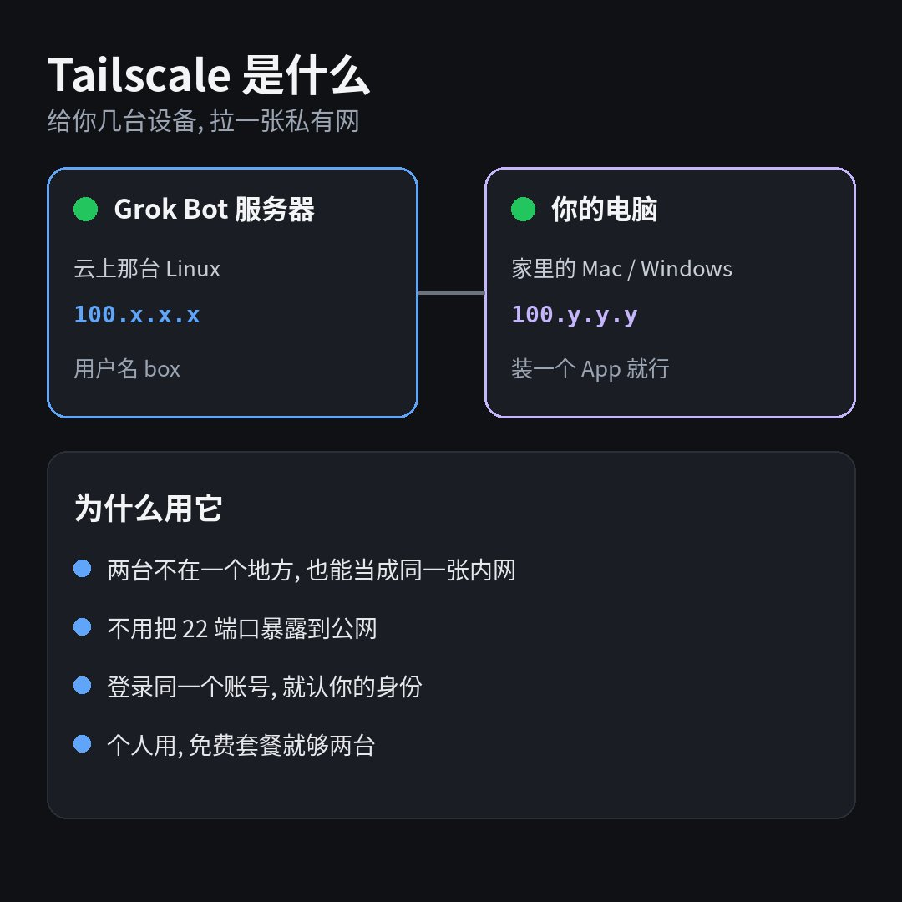
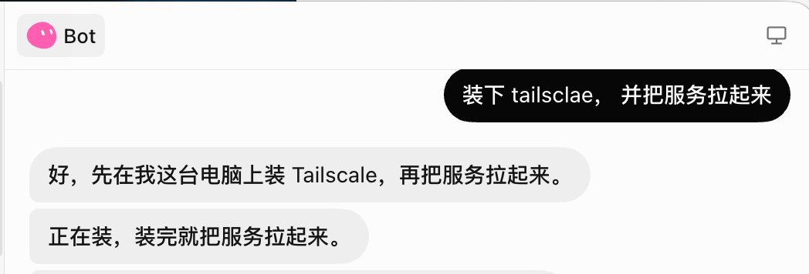
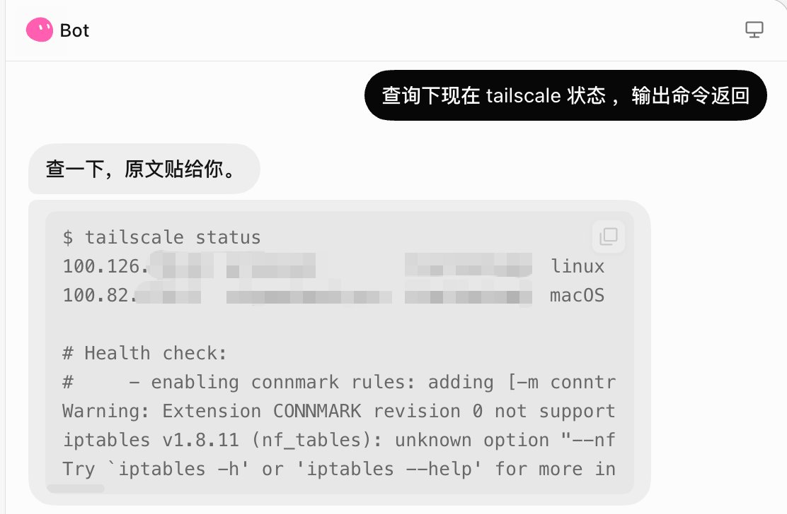
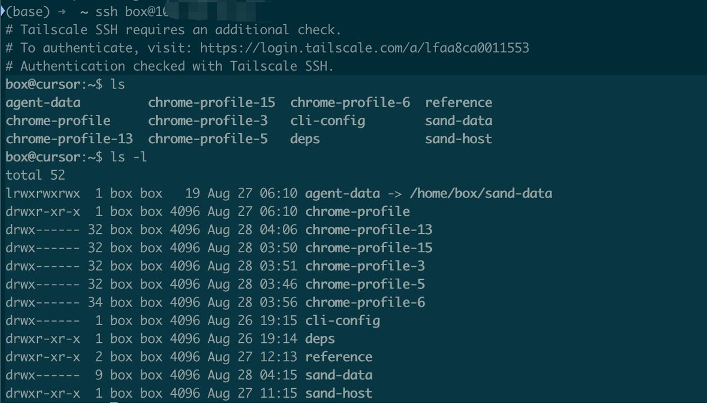

蓝哥 picks · 1/9
用 SSH 连上 Grok Bot 服务器, 保姆级教程
@0xlangeai · 蓝哥AI · Fri Aug 28 04:20:46 +0000 2026
很多人把 Grok Bot (xAI's AI assistant that comes with its own computer) 当聊天框.
其实它背后有一台真的 Linux 服务器.
这台服务器能 SSH.
大多数人只在对话框里使唤助手； 也可以在自己的电脑敲一条命令, 连上这台服务器.
中间靠 Tailscale. 就是个组网工具, 给服务器和自己的电脑拉一张私有网. 官网 tailscale.com. 个人免费套餐就够.

要准备两台设备
一边是 Grok Bot 服务器. 官方文档: Computer and apps
用户名是 box. 不是 root, 也不是你给助手起的名字. 文件主要在 /home/box 和 /workspace.
另一边是自己的电脑. Mac, Windows, Linux 都行.
自己的电脑也要装 Tailscale. 装过的略过, 直接登录同一个账号就行.
Grok Bot 服务器这边, 让 Bot 把 Tailscale 装上, 再弹出登录页给你点.
两边必须是同一个账号. 不是两个朋友互加, 是你自己的网.
官方没有把 SSH 写成一等功能， 这算曲线用上 SSH.
个人怎么用, 就三步
第一步, 自己的电脑装 Tailscale. 装过的略过.
第二步, Grok Bot 服务器登录同一个账号.
第三步, 打开 Tailscale 控制台, 看到两台设备都亮绿灯.
第四步, 在自己的电脑上敲:
MARKDOWN block
`100.x.x.x` 换成它在 Tailscale 网路里的地址. `tailscale status` 里能看到.
用户名固定写 `box`.
第一步, 自己的电脑要装 Tailscale
打开 tailscale.com/download, 按自己的系统装 App. Mac, Windows, Linux 都有.
装完打开 App, 登录自己的账号. 状态变成 Connected 就算好了.
后面 Grok Bot 服务器也用这个账号. 不是再注册一个.
第二步, 让 Grok Bot 服务器登录 Tailscale
直接让 Bot 装 Tailscale

会弹出登录授权页. 这一步需要人来操作. 用你自己的 Tailscale 账号登完就行.
第三步, 先确认通了
在 Bot 电脑里， 询问 tailsclae 状态

能看到两台, 并且拿到一段 `100.x` 地址, 就可以连.
第四步, 从自己电脑进去
自己电脑上有 Tailscale App 就行. 不必装命令行.
打开终端, 敲:
MARKDOWN block
进去之后是:

两个坑, 和不要做的事
Grok Bot 电脑自己连自己的名字, 有时会失败. 从你自己电脑连, 没这个问题.
不要把这台机器的 22 端口暴露到公网.
不要把内部通道的地址和 token 写进对话
Source: https://x.com/0xlangeai/status/2093192039051489662
← Previous Cursor + Grok Bot + pstack，真正的 AI 软件工厂开始 →